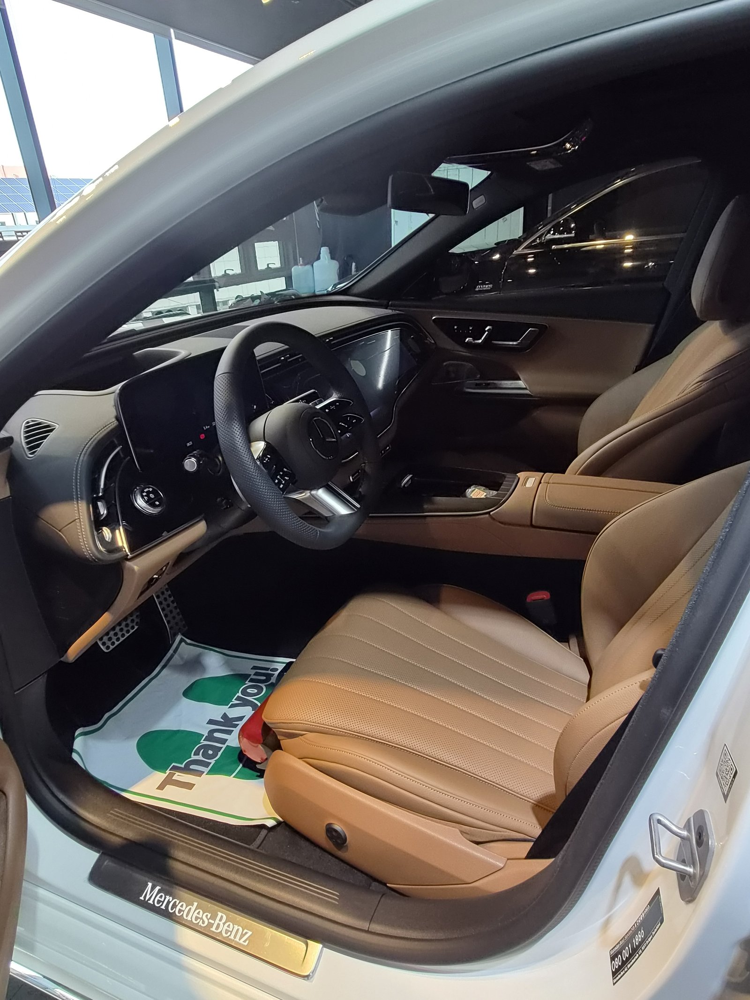
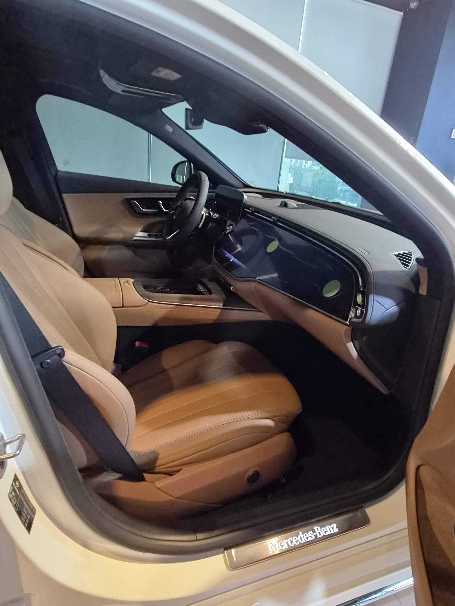
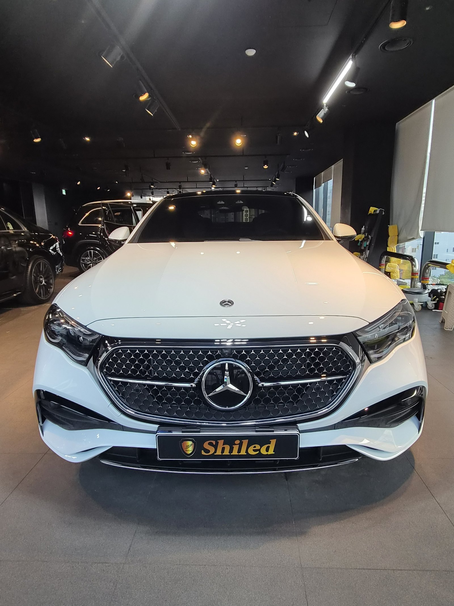
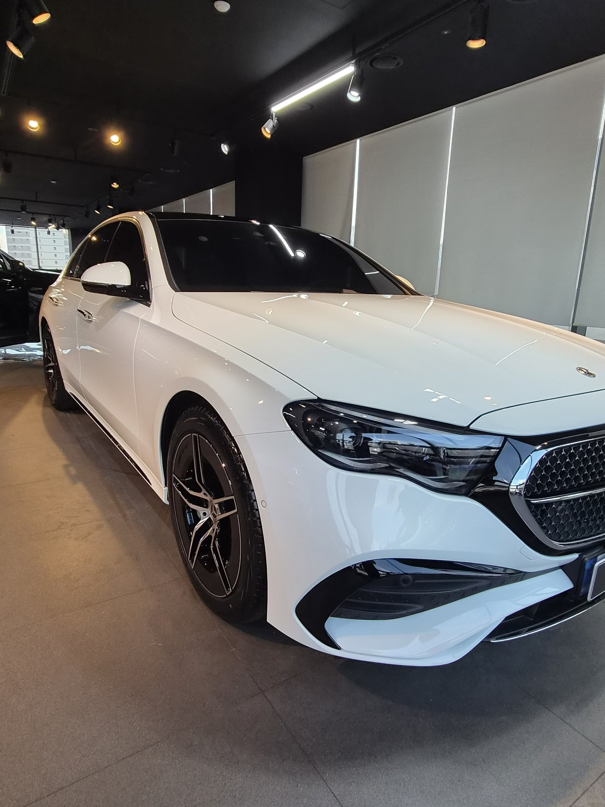
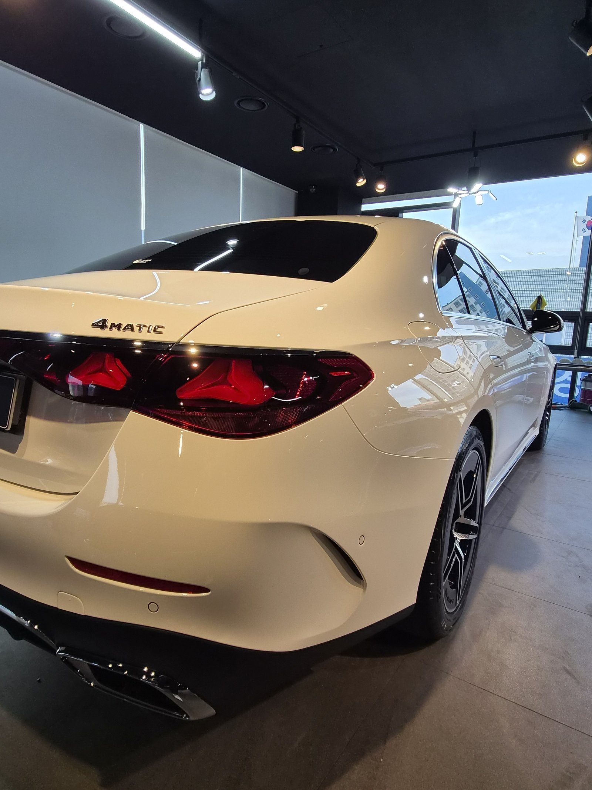
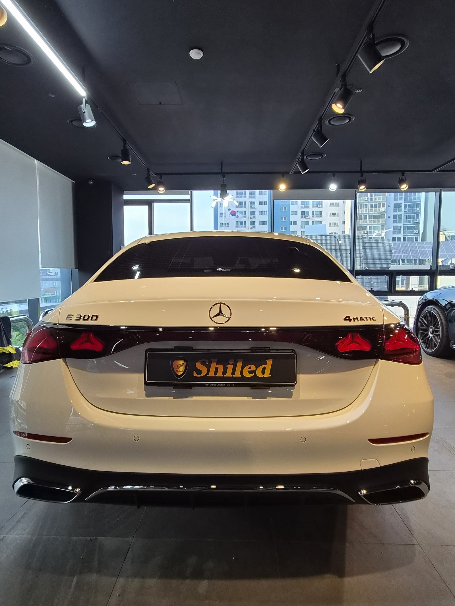
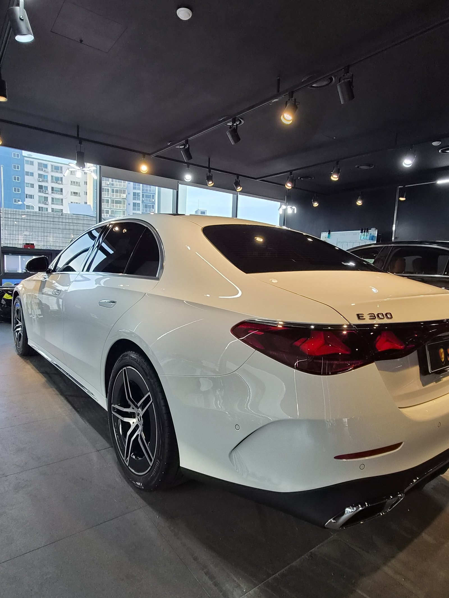
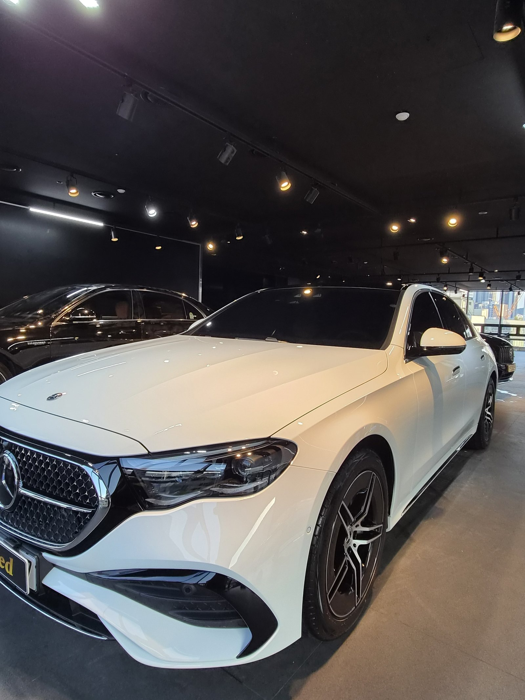

벤츠 E300 4매틱 백색입니다. 아직 출고 전, 새 차입니다.
이 차는 F5 유리막코팅 + 시트코팅으로 함께 진행했습니다.

백색 신차, 왜 코팅이 필요한가
흰색은 잔기스가 안 보일 뿐 없는 게 아닙니다.
오염과 물자국도 백색에서는 은근히 잘 드러납니다. 그래서 출고 전, 도장면이 가장 깨끗한 신차 상태일 때 F5로 코팅막을 입혀둡니다.

F5로 매끈하고 젖은 듯한 윤기
F5는 색감 깊이를 끌어올려 글로시함을 극대화하는 코팅입니다.
백색은 밝은 만큼 표면이 매끈하지 않으면 오히려 칙칙해 보일 수 있습니다. F5를 올리면 젖은 듯한 윤기가 생겨 도장면이 한층 매끈하고 선명하게 보입니다.


기술자의 팁
4매틱처럼 사륜구동 차량은 겨울철 제설제나 오프로드 환경에 노출되는 빈도가 상대적으로 높습니다. F5 코팅과 함께 3주 주기 관리세차, 마스터샤이니 도포를 권해드립니다.


실내는 시트코팅까지
외장만으로 끝내지 않았습니다.
가죽시트는 오염과 자외선에 그대로 노출되면 갈라지고 색이 바랩니다. 신차 상태일 때 시트코팅까지 올려두면 실내 컨디션도 함께 오래 지킬 수 있습니다.


자주 묻는 질문
Q. 백색 신차는 왜 코팅이 필요한가요?
A. 흰색은 잔기스가 안 보일 뿐 없는 게 아닙니다. 오염과 물자국도 은근히 잘 드러납니다. F5로 매끈하고 젖은 듯한 윤기를 더하면 이런 단점을 보완할 수 있습니다.
Q. 시트코팅은 왜 함께 하셨나요?
A. 가죽시트는 오염과 자외선에 노출되면 갈라지고 색이 바랩니다. 외장 F5 코팅과 함께 올려 실내 컨디션도 오래 유지하도록 했습니다.
Q. 4매틱 사륜구동 차량도 코팅 방식이 다른가요?
A. 코팅 방식 자체는 같습니다. 다만 제설제·오프로드 환경 노출이 잦을 수 있어 하부·휠하우스 관리를 더 신경 써서 안내해 드립니다.
Q. 쉴드광택 위치와 예약은 어떻게 하나요?
A. 부산 남구 유엔로220 1F 쉴드광택입니다. 예약·상담은 010-3384-1850, 대표 최한중이 직접 상담하고 책임 시공합니다.
새 차일수록 시작점이 다릅니다. 외장과 실내, 함께 지켜두십시오.
제품을 직접 만드는 사람이 직접 시공합니다.
부산에서 신차코팅을 고민 중이시면 편하게 연락 주십시오.
어떤 차를 타냐보다 어떻게 타냐가 중요합니다~!
시공 중에는 전화를 받지 못할 때가 많습니다.
카카오톡으로 차종과 원하시는 시공을 남겨주시면 확인 후 답변드립니다.
쉴드광택 · 부산 남구 유엔로220 1F · 대표 최한중